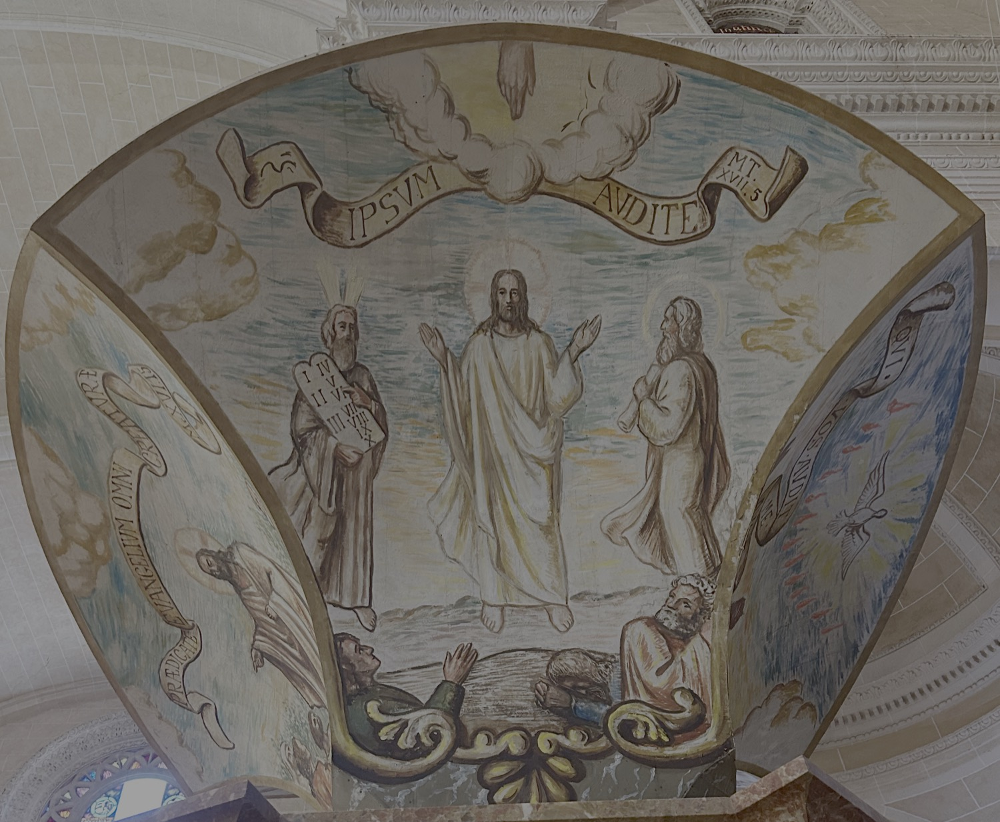

Este fresco describe la escena de la Transfiguración, narrada en el Evangelio de san Mateo (17:1-5), en la que Jesús subió con algunos discípulos a lo alto de un monte y allí se transfiguró ante ellos. A su lado aparecieron Moisés y el profeta Elías, y una nube luminosa los cubrió mientras una voz proclamaba: “Este es mi Hijo, el amado, en quien me complazco; escuchadle”. Moisés aparece a la derecha de Jesús con las Tablas de la Ley, mientras que Elías, a la izquierda, sostiene un rollo de pergamino que lo identifica como profeta.
Los frescos del tornavoz del púlpito son obra de Mn. Llorenç Bonnín (1952). El tornavoz reproduce la forma del que Antoni Gaudí diseñó para el púlpito mayor de la Seu, retirado en 1971.